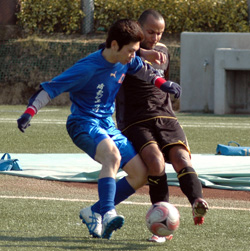

|
Setagaya Koen, Saturday 7th February
It is said that Nero fiddled while Rome burned, that Caligula had his wife humped by a horse as he stared madness in the face. Panthers Captain, Romen the Ruthless, seems to have some aristocratic lineage from the Pallatine, nonchalantly fiddling with his dog as the midfield crumbled; the dream of 3 points with it.
Let's not blame him for another "defeat” though (it would be both cruel and unfair to mention the equalizer he gave away against Shane), it was a determined team performance and kept the unbeaten streak in the league to 7 games.
I heard a witty phrase recently that fitted this game perfectly: a game of two halves. I thought that was really clever.
The first period therefore saw Panthers utterly dominate. From the off, they were full of running, tight passing and mazy runs. Ma exemplified this by dancing round the opposition and finishing with aplomb to give us an easy lead.
Good chances game and went. Chris had a great opportunity in the box after the ball fell to him from an incoming free-kick. The bikini-clad girls on his mind clouded his vision and he swung a fierce shot at the ball, which unfortunately has passed him about 10 seconds earlier.
Sid used his pace to break through on goal and had the chance to set himself up with a perfect hat-trick by finishing with his left. Sadly, he went safe and toe-poked a lame shot into the corner flag (read side netting - ed).
He soon made amends by slotting a superb reverse pass into Kev’s path after great work by Jon and Mikhail but the Geordie had shot-fatigue after numerous attempts from the half-way line earlier, wasting a glorious chance to go two up.
Maybe he thought, like many Panthers, it was going to be a walk-over. It was one way traffic after all, the defensive trio doing well to cover up the gaps left by the midfield. The Jets only had one real chance and that was snuffed out by a great save by Kieran.
This continued early in the second-half when Romen made a PS3 dream pass to Jon - who was a clear 2 yards behind the last man - was called offside only after scoring.
Ma then showed us he only wants to score great goals, by lifting another free kick into the box over the bar from 2 yards out.
Tiredness set in. The formation had people out of position and was soon top-heavy with attackers. We played 20 minutes in the second half with a 3-3-4 formation when 1-0 up. Tom was besieged alone in the middle. Jets gained heart and energy by having 122 players with them to drive them forward.
Waving away half-time appeals from his veterans to change the formation, Romen the Unruly, repeated the action when asked in the second half as the midfield went AWOL. He stroked his dog like a James Bond baddie escaping in his spacepod as his plot is foiled.
Sure enough, Jets scored. Unexpected slick passing outwitted the tiring Panthers to put their gangly striker on the edge of the box. He duly obliged his pals with the perfect finish across Kieran into the bottom corner.
This galvanized the Panthers who upped a gear towards the end and almost snatched a victory after a great effort from Jon whose spinning snapshot just off-target. This was matched by Tom’s glancing header that just shaved the post on its way out.
It finished 1-1. A scrappy but enjoyable game on a sunny day in the heart of Tokyo.
Two points dropped but there are several excuses to soothe our weary bones:
Stout-hearted and numerous opposition: Credit to Jets, they fought back and battled hard. Never gave up and challenged for everything. Having 10 subs paid off as the Panthers tired.
The mystery formation: Trumpets heralded the announcement of the formation: 3-4-3. This seemed to work really well in the first half but soon fell apart once the equations of personnel messed up and left the team lopsided and unbalanced.
The “Linesmen” – One reason we didn’t score more (not gonna say win as who knows) for sure, were the disreputable Jet’s linesmen who put the flag up every time we went through. Morally reprehensible behaviour and the British Jets really need to teach their local team-mates what the spirit of the game is about. The Sumo Association expects everyone to stick to the traditions, as football is our game, we Brits do too with our national sport. This is a shame for the JETS as it marred the reputation of the team who on the pitch were models of the competitive spirit of the game, fighting back to earn a draw. Come on Guys, you can do better than that.
The Referee: The ref was old skool. No fuss and nonsense. Bookings only if a leg was broken. He was so old skool that it seems the offside rule had not been invented when he were a lad so he just ignored the cheating by the linesman, saying, “ There are no independent linesmen in Japan – accept it”. A bit wimpy on that front but give him his credit – no bookings, no major altercations, no red cards. Let play flow and kept everyone on the pitch in an often niggly game.
The Huge Pitch – Only a crazy fool would criticize the pitch but I mention it only as a caveat for next game. A couple of players suffered major fatigue due to Thursday night training. Would caution against training too soon before a game there. It is also so big that an undisciplined midfield leaves too many gaps.
Overall: A worthy draw, but we should have sealed it first half.
Player Ratings:
Kieran 8 – Safe hands, came out of the box more today and make a superb save to keep us in it.
Lee 9 - One of his best games for us. Always in position, solid defending, and brilliant crossing.
Andy V – 9 Composure on the ball, great reading of the game. Mr. Reliable as usual.
Saco – 8 Hard-tackling, athletic performance. A Japanese eagle in the air.
Chris – 8 Consistent as ever. Linked really well with Lee on the right. Fine way to end his (first) spell with the Panthers. Good luck, mate. Start converting off the pitch, dude.
Mikhail – 8 Great one touch passing on the left with Saco and Andy. Strong in tackle. Growing in composure with each game.
Kev 5 - Someone poured lead into his veins in his sleep. A slow-motion performance at best. Haneda reported radar interference due to his shots.
Rick 8 - Great addition to the team. Good touch, strong tackling and a Rory Delap throw. Let’s have him back asap.
Romen 8 - Industrious performance from the grape-eating, toga-wearing midfield maestro. Strong and determined tackling against some lumpy opponents. His game has improved at least 5% since last year.
Tom 8 - Team player’s performance. Out of position and outnumbered 3-1 he battled hard in the second half to stop a rout occurring.
Scott 6 - Pacy perfomance on the left. Herculean strength at times but his touch let him down today.
Ma 8 – Splendid exhibition of skill, dribbling and shooting. Fantastic first goal, but faded second half. More to come though.
George 7 - Full of running and chasing. Wasn’t given much service by a non-existent midfield and got nothing off the ref including a stonewall penno.
Sid 7 - Even at the age of 50, he is still showing everyone that the game is about fun and enjoyment – we are still laughing at his shot in the first half. Great target man and showed he still has a footballing brain with a deft pass through to Kev.
Jon Day – 6 Bad day at the office for The Hitman. Left isolated partly by intent, but suffered from a lack of service and cowardly linesmen. More running would have been seen him get more out of the game.
Report by Kev 'the kit' Gray
|